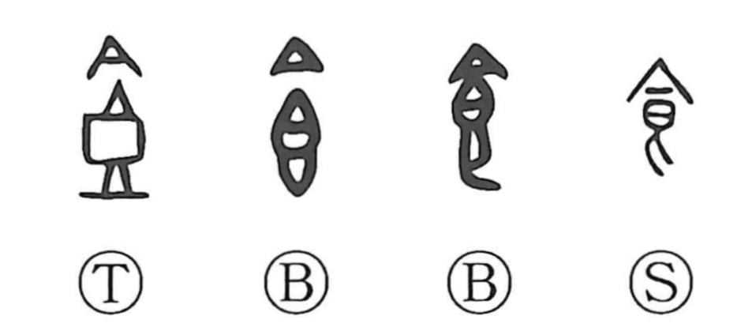

Explanation
食 pictures a covered vessel for food. The lower 皀 is a vessel holding prepared grain for an offering, and the upper strokes form its lid. The ancient shapes show the container and cover more plainly than the modern graph.
The contents give the meaning ‘food’; taking the food gives ‘eat.’ Because eating sustains the person, 食 can also mean to nourish or provide someone with food. The same vessel can be viewed from the side of the person receiving nourishment or of the person supplying it.
Meals also had a ritual setting. The principal morning and evening meals were associated with receiving and sending off the sun. Food was therefore both ordinary sustenance and an offering through which human life was ordered with the sacred powers.